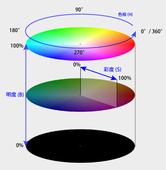
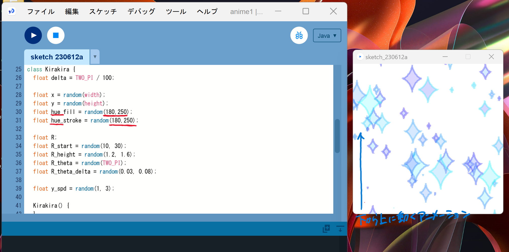
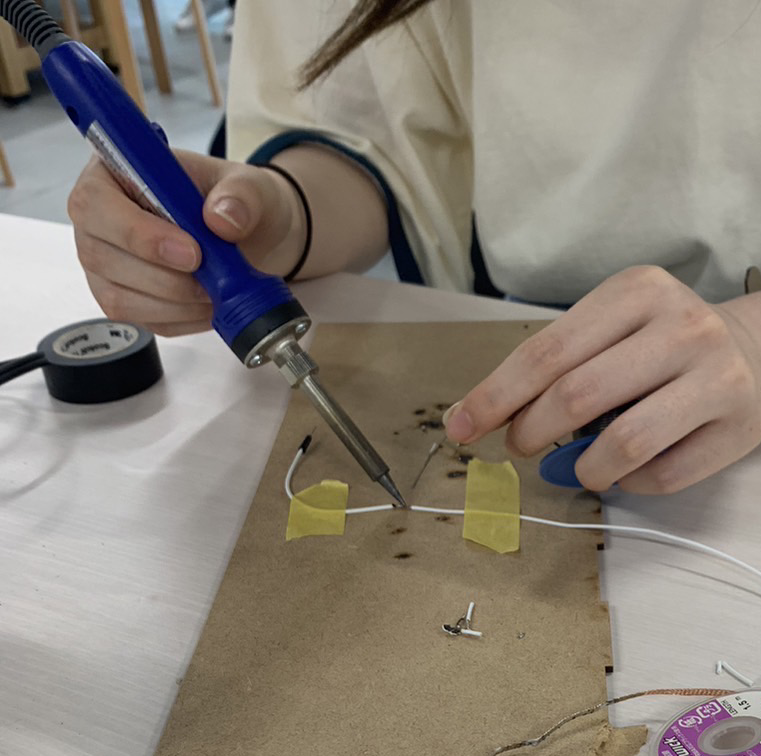
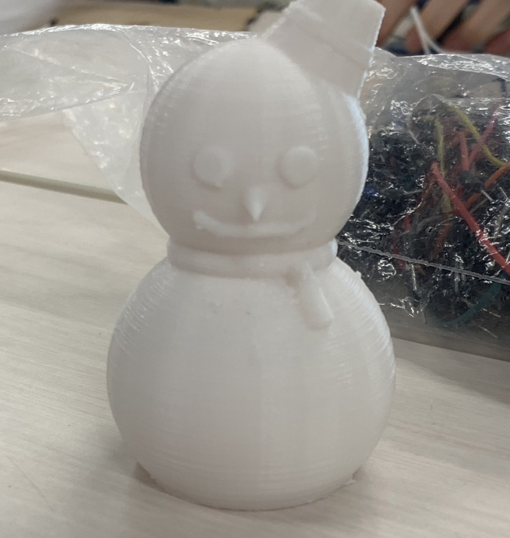
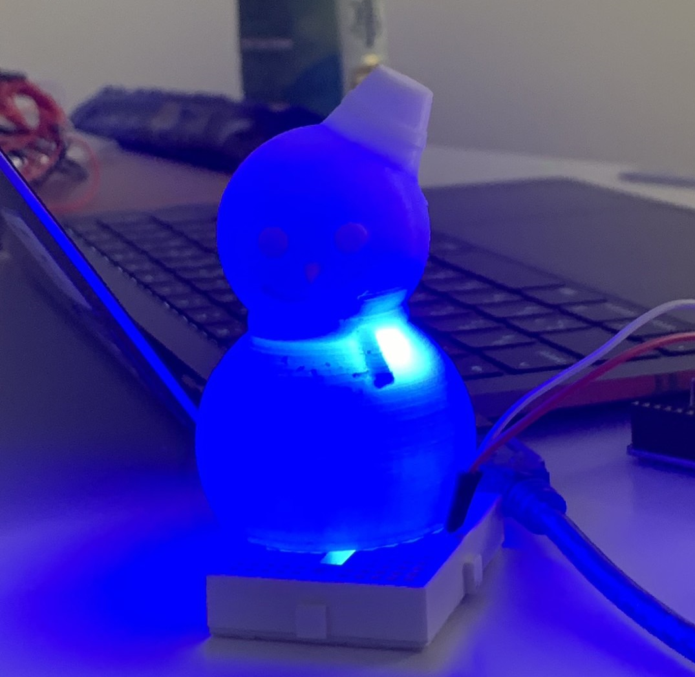
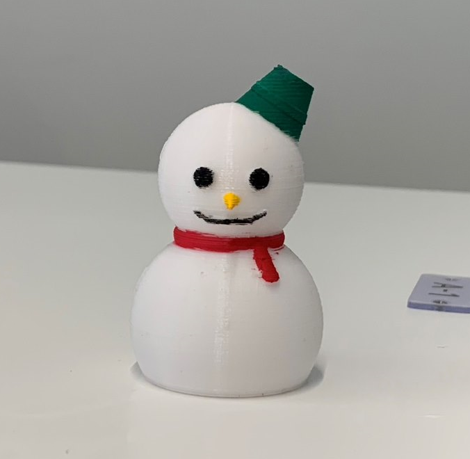

プロセスメモ
■は考えないといけないこと、疑問等
●は具体的にやること
→はやったこと
■光センサーの値が変わることで映像を流す方法、出来れば何種類か流したい
●まずは光センサーが反応したら動画が再生される方法を調べる
→Processingを使えばできそう
参考サイト
■参考にしたソースコードを光センサーでできるように自分たちなりに変えてみたけれどできない
→先生に相談
ArduinoとProcessingを繋げる方法を教わる
■光センサーの値によって異なる魔法の映像を流す
●明るさの違うライトを用意（デジファブ使用）して、センサーの値を変える
●まずは一種類（氷魔法？）だけやってみる
→グループで役割分担、Processingでアニメーションを動かす（簡単なものから試す）
→
参考サイトをもとに色を寒色系に変えて氷魔法っぽくする
HSBはHue（色相）、Saturation（彩度）、Brightness（明度）

参考
色相を180から250の間でランダム指定する
↓結果

氷魔法っぽさが少し出てきた
●光センサーの反応によってアニメーションとQRコードを表示させる
→
ソースコード

■雪だるま＆QRコード・杖作成、動画作成のために見栄えを良くしたい、音は出せるか
●配線を長くする(スクリーンに近い場所にセンサーを置けるように)
→はんだでコードを延長

●雪だるまとQRコードを作成＆接続
→雪だるま１号完成

●空洞が上手く作れず光が通らないため改良が必要
→雪だるま２号完成


●画面表示と同時に魔法っぽい音を流す
→既存のソースコードに音を流す要素を追加する
■実行直後の一回しか音が流れない
●実行し直さなくても音が流れるようにしたい
→真偽を確かめるbooleanを使って、実行し直さなくても光を当てる度に音が一回流れるようにする
ソースコード(完成版)
●杖を完成させる
→3Dプリンターで作成、アクリル絵の具で色付け